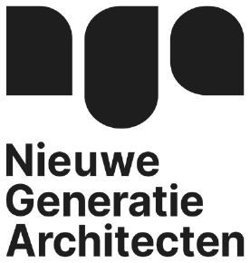
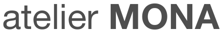

Groen om de hoek
Het Nelson Mandelapark ligt voor de deur. Gaasperplas, Brasapark en Bijlmerweide op fietsafstand, daarachter de Amstelscheg en het Gein.
CPO-bouwgroep · Amsterdam Zuidoost
Negen houten woningen, zelf ingedeeld en samen gebouwd.


1 · Waar?
Kavel A2 (rood) ligt direct aan het Nelson Mandelapark, in een buurt die bijna helemaal in hout wordt gebouwd.
Amsterdam Zuidoost is volgens bewoners het groenste stadsdeel. Bussen stoppen aan de rand van het park. Trein en metro (Bijlmer ArenA, Kraaiennest, Bullewijk) liggen op ± 6 minuten fietsen. De buurt is autoluw: er komen plekken voor deelauto’s in de buurt en je fiets stal je in het gebouw. Een eigen parkeerplaats krijg je niet.
Bekijk de plek op Google Maps →Alle bouwprojecten in Zuidoost →
Rond het Nelson Mandelapark groeit een groene, gemengde en levendige buurt.
Het Nelson Mandelapark ligt voor de deur. Gaasperplas, Brasapark en Bijlmerweide op fietsafstand, daarachter de Amstelscheg en het Gein.
In het park: sportvelden, een skatepark en sporttoestellen. Aan het Anton de Komplein: het Bijlmer Parktheater, een zwembad, de markt en het stadsdeelkantoor.
Het winkelhart wordt vernieuwd, met 600 nieuwe woningen rond groene binnentuinen. Station Bijlmer ArenA ligt ernaast.
ArenAPoort krijgt zo’n 5.700 woningen. Amstel III en Holterberg worden gemengde stadswijken. De Nelson Mandelabuurt: ca. 725 woningen, bijna helemaal in hout.
Bronnen: Mecanoo, I amsterdam, go-kids.nl, whereisthemarket.com, O&S, NUL20, Masterplan Zuidoost 2021–2040, Paul de Ruiter Architects, architectenweb, selectiebrochure gemeente Amsterdam.
2 · Wat?
De eerste structuurschets is gemaakt.
Een houten casco met vrije indeling. Doorzon- of hoekwoningen van 40 tot 100 m², met een veranda aan het park en een lift. We streven naar energielabel A+++: een zeer zuinige woning. De draagconstructie is voor minimaal 65% biobased, vooral hout. En er komt ruimte voor planten en dieren, met nestkasten, klimgroen en een groen dak.
Bij het gebouw horen een gemeenschappelijke tuin, dakterras en keuken.

Het gezamenlijke deel is geschetst, maar je denkt er nog over mee. Je eigen woning deel je zelf in, binnen de constructie en de gevel.


Begane grond
Verdiepingen
Dak
Schetsen uit het plan van aanpak, indicatief.
3 · Wie?
“Ik wil opstaan met de ochtendzon en dineren met de avondzon.”
“Mijn moeder woont straks naast ons, met een eigen voordeur.”
“Een slaapkamer zonder buren die langs mijn raam lopen.”
“Ik wil een open woning zoals een loft, met zo min mogelijk wanden.”
“Samen met mijn broer een woning, ieder met een eigen deel.”

Illustratie: voorbeeldbewoners
SoSo Lobi betekent ‘alleen maar liefde’.
Ieder krijgt een eigen woning. Met negen huishoudens ken je iedereen en blijven besluiten overzichtelijk.
SoSo Lobi is ontstaan uit een sterke band met Amsterdam Zuidoost. We willen hier blijven, omdat we de kracht en kwaliteiten van dit stadsdeel zien.
Je eigen woning is compleet, met eigen keuken en badkamer. Een gemeenschappelijke tuin, dakterras en keuken heb je er als extra bij, voor een feest of als je klein woont. Buurtgenoten kunnen de ruimtes ook reserveren.
We zijn zelf opdrachtgever, zonder ontwikkelaar. Over het gebouw beslissen we samen, over je eigen woning beslis je zelf.
Zij doen het vakwerk; jij beslist mee.

Architect
CPO-specialist, met meer dan 10 CPO-projecten.

Ontwerpers
Mede-initiatiefnemer en lid van de groep, met de visie vanuit de buurt.
Onafhankelijk
Bewaakt het proces en de besluitvorming.
Onafhankelijk
Bewaakt de begroting.
Later komt er een aannemer in bouwteam bij, met ervaring in CPO en houtbouw. De gemeente toetst het ontwerp.
3 · Wie?
4 · Hoe?
Van € 5.500 per m² casco plus tot € 6.300 per m² afgewerkt, incl. btw over de grond. De grootte bepaal je zelf; dit zijn voorbeelden. Een raming, nog geen koopsom: de prijs volgt uit de begroting.
40 m²
60 m²
80 m²
Eigen geld vooraf: inleg € 25.000 in 5 termijnen (vanaf 80 m²: € 35.000, zie planning), telt mee in je woningprijs. Plus € 1.000 entree en tot ca. € 6.700 waarborgsom, verrekend aan het einde. Erfpacht: € 62 per m² per jaar aan de gemeente. Eeuwigdurend: het bedrag stijgt alleen mee met de inflatie. Afkopen in één keer kan ook.
Prijspeil 2027; tot de aanbesteding in 2028 kunnen de bedragen nog meestijgen met de bouwkosten en de inflatie. Voor woningen kleiner dan 60 m² kan de prijs per m² iets hoger uitvallen. De ondergrens is casco plus, de bovengrens een afgewerkte woning (zie hieronder). Maandlasten: vraag een hypotheekadviseur.
Stap je uit? Je inleg krijg je terug als er een vervanger instapt. Tot dan betaal je je deel van de kosten.
Het hoge kwaliteitsniveau zit in het gebouw zelf: wat je later niet meer kunt veranderen. De afwerking kies je zelf.
in beide prijzen
vanaf ca. € 5.500 per m²
tot ca. € 6.300 per m²
De toets per onderdeel: kun je het over tien jaar zelf nog veranderen? Dan is het jouw keuze. Wat precies in casco plus zit, werken we uit in de ontwerpfase.
5 · Wanneer?
Beoordeeld en gekozen door de gemeente voor kavel A2 (juni 2026)
Plan van aanpak goedgekeurd (najaar 2026)
16 nov: vereniging
30 nov: grond gereserveerd
Je betaalt€ 1.000 entree (16 nov)
deel waarborgsom 1 (30 nov)
8 jun: naar de gemeente
Je betaalt1e termijn € 5.000 (1 feb)
2e termijn (1 apr)
3e termijn (1 jun)
14 sep: naar de gemeente
30 nov: erfpacht rond
Je betaalt4e termijn (1 sep)
5e termijn (1 nov)
deel waarborgsom 2 (dec)
31 jan: aanvragen
1 aug: grond overgedragen
Je betaalthypotheek bij overdracht
1 dec 2028: start
± dec 2029: sleutel
Je betaalterfpacht, elk jaar
Een termijn is € 5.000 (vanaf 80 m²: € 7.000). Stap je later in? Dan betaal je de gemiste termijnen bij instap. De data volgen de planning van de gemeente en kunnen nog verschuiven.
Doe je mee?
Hoe eerder je instapt, hoe meer je kiest. Mail ons voor een kennismaking.
sosolobicpo@gmail.com